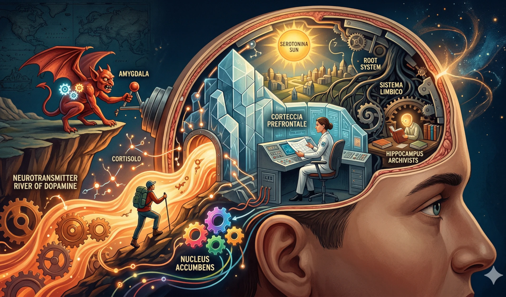
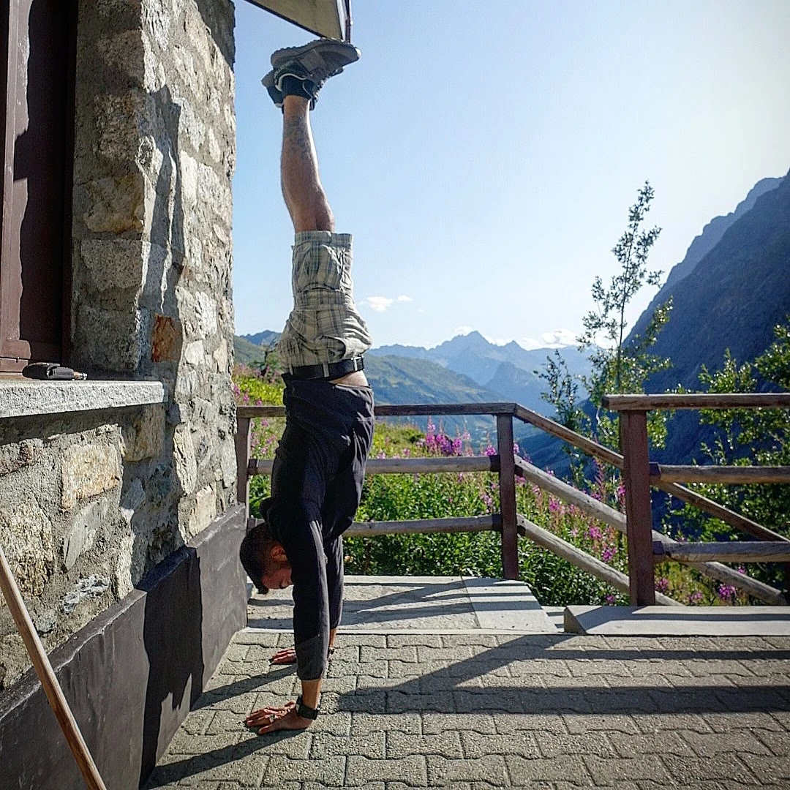
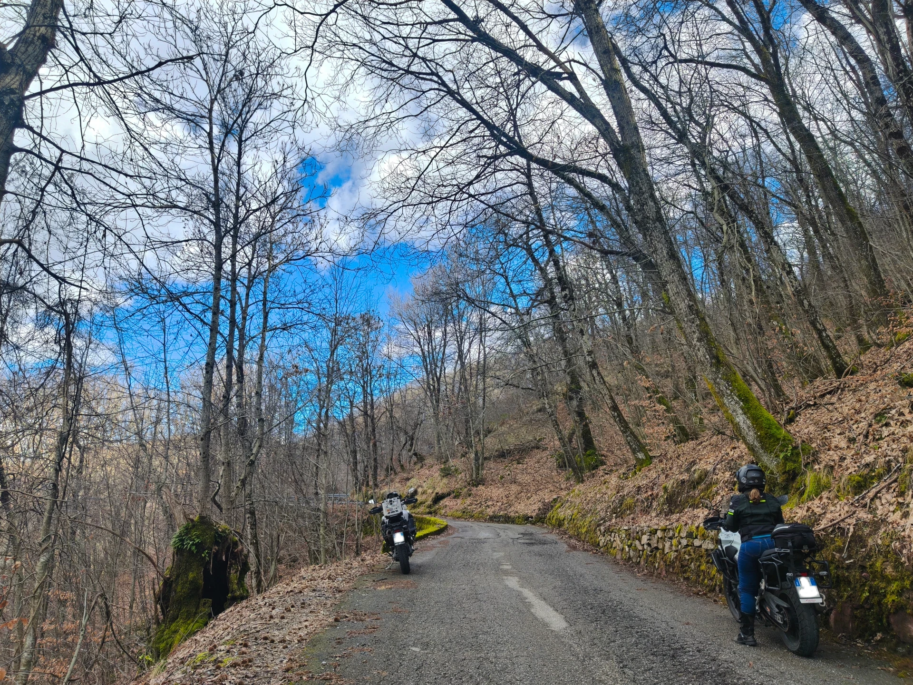
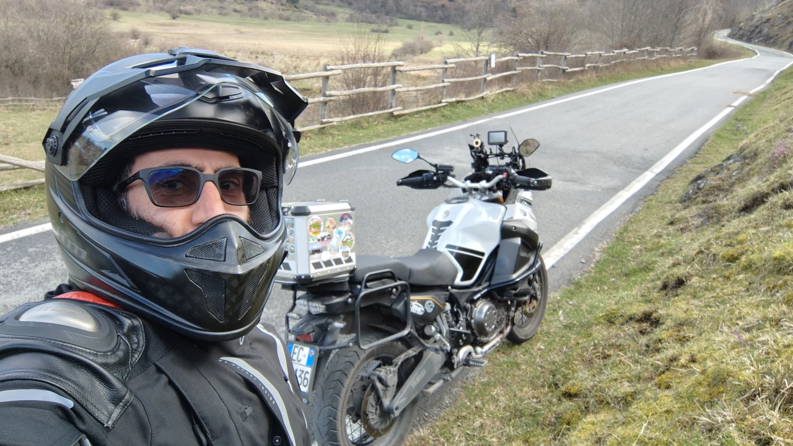
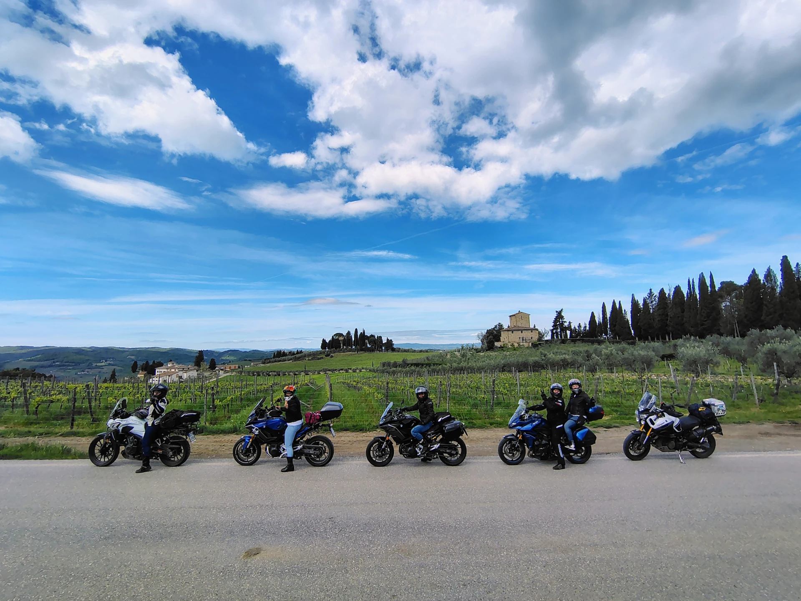
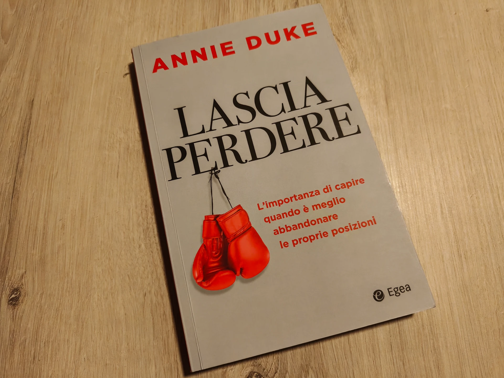

Il tuo cervello non fa il tifo per te — e questo libro te lo spiega benissimo
Amigdala, dopamina, cortisolo, ossitocina: cosa succede davvero nel tuo cervello ogni giorno. Una riflessione sul libro di Borzacchiello "Usa il cervello prima che lui usi te" — e su anni di viaggio interiore.
Leggi l'articolo
Il motore perfetto: perché a 40 anni mi sento meglio che a 20
Calisthenics, MTB, trekking e moto: come uno stile di vita fisico trasforma la chimica del cervello e l'approccio alla vita. Dopamina, endorfine, BDNF — non è filosofia, è biochimica.
Leggi l'articolo
Piloti della propria vita: come battere la stagnazione salariale italiana (e perché ho scelto il codice)
Salari reali -8,8% in 4 anni, mentre Francia e Germania crescevano del 30%. Dati OCSE, mappa dei settori che pagano davvero e perché ho scelto il digitale come strada verso la libertà professionale.
Leggi l'articolo
Mindset e crescita personale: la mia storia vera per ispirarti a cambiare
Il racconto sincero di come ho trasformato le difficoltà in consapevolezza e voglia di vivere davvero.
Leggi l'articolo
Perché non sono ancora architetto software (ma non mollo)
Un percorso autentico fatto di piccoli passi quotidiani, tra lavoro, passioni e sogni da realizzare. Da zero, con poco tempo ma con la determinazione di costruire qualcosa di grande, senza mai mollare.
Leggi l'articolo
Scrivere meglio per vivere meglio: il codice come specchio della consapevolezza
Scopri come la scrittura di codice pulito può diventare lo specchio di una vita più consapevole, centrata e motivata.
Leggi l'articolo
Gestire l'ego per vivere meglio: lezione da un viaggio in moto in Toscana
Un viaggio tra le strade dell'Eroica in Toscana diventa l'occasione per riflettere su ego, presenza e crescita personale.
Leggi l'articolo
Il potere del confronto e della condivisione
Un articolo ispirato, personale e reale sull'importanza del confronto e della condivisione per crescere nel lavoro, nello studio e nella vita.
Leggi l'articolo
Quando l'adattamento è produttivo e quando invece diventa distruttivo
Una riflessione personale su come l'adattamento possa essere positivo o devastante, partendo da un'esperienza con una moto.
Leggi l'articolo
A un bivio a 40 anni: meccanica, sviluppo software e la scelta che può cambiare tutto
Una profonda riflessione su un bivio professionale a 40 anni, tra un percorso consolidato nella meccanica e la passione per lo sviluppo software.
Leggi l'articolo
Lascia perdere: imparare a mollare per vincere
Perché mollare non è un fallimento, ma una scelta strategica? Una riflessione sul libro di Annie Duke, il valore atteso e la saggezza delle formiche.
Leggi l'articolo
Aspettative e MTB: ogni sasso superato è un piccolo passo avanti
Come la mountain bike mi ha aiutato a capire il rapporto con le aspettative e gli ostacoli. Una riflessione su cosa significa muoversi, anche in modo imperfetto.
Leggi l'articolo
Il codice della libertà: perché voglio diventare sviluppatore per lavorare da dove voglio
Libertà geografica, consulenza remota e 40 milioni di nomadi digitali: perché lo sviluppo software non è solo una passione, ma la strada verso una vita professionale su misura.
Leggi l'articolo